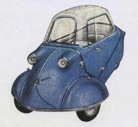

Il "Mivalino" 175 c.c.
Motoscooter cabinato a 3 ruote
Presentato al Salone del Ciclo e Motociclo nel 1953, era costruito su licenza della Messerschmitt quale copia del KR175 tedesco. Si trattava di un motoveicolo cabinato a 3 ruote con motore 175 cc a 2 tempi raffreddato ad aria, avviamento elettrico e retromarcia. Poteva ospitare due persone, guidatore e passeggero, su due sedili allineati longitudinalmente. Era commercializzato nelle versioni "Normale" ed "Extra". L'idea era quella di contribuire alla motorizzazione del paese fornendo ai ceti medi un'alternativa economica alle automobili del tempo. Il successo però fu limitato, e con l'esordio della FIAT "Seicento" nel marzo dl 1955 tramontarono anche le aspettative dei suoi ideatori.

Caratteristiche tecniche
MOTORE: Monocilindrico a 2 tempi, alesaggio e corso 58 mm x 65 mm
Cilindrata effettiva 171,7 cc, potenza effettiva 9 CV a 5500 giri, rapporto di compressione 1:6.5
Velocità di crociera 75/85 km/h
Carburatore Dell'Orto UB 24 S
Accensione a spinterogeno con dinamo coassiale 6 V- 45/60 W
Candela Marelli 225 (e per alta velocità Marelli 240)
Cambio a 4 rapporti con comando a mano, marcia a vuoto comandata dal volante, retromarcia
Frizione a dischi con guarniture in sughero in bagni d'olio
CONSUMO: 3 l per 100 km
TELAIO: In tubi di acciaio
CARROZZERIA: Aereodinamica costruita in acciaio stampato
CAPPOTTA: In plexiglas in un unico pezzo
PNEUMATICI: 4,000 x 8 (tutte le ruote sono intercambiabili)
LUNGHEZZA: 2820 mm
LARGHEZZA: 1220 mm
ALTEZZA: 1200 mm
PESO: 175 kg